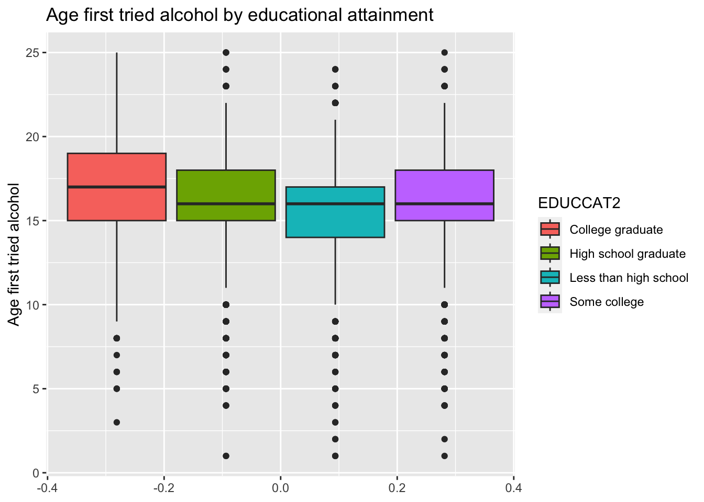

1 Background and Significance
Substance abuse can contribute to mental health and behavioral problems, such as stroke, heart disease, and depression [1]. Despite these risks, individuals still engage in substance use. According to the National Center of Drug Abuse Statistics, 59.277 million (or 21.4%) of people aged 12 and over have used illegal drugs or misused prescription drugs within the last year – 25.4% of illegal drug users have a drug disorder [2]. There seem to be other factors within an individual’s experience that play a role in substance abuse – in many cases, there is a combination of biological, psychological, and social factors that give reason for one’s substance use. In particular, the main question of this paper is: what are the social determinants of alcohol abuse? Social determinants refer to the social and economic conditions in an individual’s life that can play a role in an individual’s overall wellness [3].
Existing literature has found that social and economic factors affect the health of drug users indirectly by shaping risk behaviors [1]. Thus, we hypothesize that variables related to a patient’s educational attainment, income bracket, race, age when first drank alcohol have a statistically significant impact on alcohol abuse.
2 Methods
a. Data collection.
Our data was extracted from the 2012 National Survey on Drug Use and Health population data, which was used to assess substance use disorders and treatment through recording patterns in specific substance use and mental illness measures. The survey was conducted on general civilians from age 12 or older in the United States. The data was collected from 68,309 interviews carried out by Research Triangle Institute International staff members which had a 73.04 percent response rate and a weighted screening response rate of 86.07 percent.
The original 2012 NSDUH dataset captures information on 5 categories: demographics, substance use and treatment, mental health, education, and early age experiences. Types of drugs included are alcohol, marijuana, cocaine (including crack), hallucinogens, heroin, inhalants, tobacco, pain relievers, tranquilizers, stimulants, and sedatives. In light of our study, we will focus on the 18-25 age group and alcohol variables.
b. Variable creation.
In our dataset, 15 variables are taken from the original 2021 NSDUH. We dropped all observations that are not from the age group 18-25 years old using the age category variable. The main variable of interest is the age first tried alcohol variable. Demographic variables such as education and income are selected to determine social and economic factors that impact alcohol use. Other potential determinants like mental health variables such as “ever had anxiety/depression”, “ever received treatment” will also be investigated. A more detailed list of variables and description can be found in the Appendix section.
For the purpose of our analysis, the educational attainment and income variables were condensed to 2 separate levels rather than 4. The former includes the combination of “Less than high school” and “High school diploma” values to make “High school”, and the combination of “Some college” and “College Degree” to form “College”. The latter includes the combination of “Less than $20,000” and “$20,000 - $49,999” values to make “Under $50,000”, and the combination of “$50,000 - $74,999” and “$75,000 or More” to make “Over $50,000”. This process was taken to simplify the process of conducting permutation tests, which is discussed in the next section. Furthermore, we dropped missing “ever received treatment” values as this was due to the number of non-users who did not ever use alcohol.
c. Analytic Methods.
We aim to identify potential association between social and economic factors and alcohol use. To do so, we used R [4]and Quarto [5] softwares along with tidyverse [6]and infer [7] packages to analyze and produce results (in text citation). We used the variable “age first used alcohol” as an initial testing metric of alcohol use; its relationship with income (INCOME), education (EDUCCAT2), mental health variables (DEPRSLIF/LIFANXD), and treatment (TXEVER) are visualized individually. In order to clearly present the levels of the categorical variables education, income, mental health, and treatment variables, we renamed them to show only relevant information and deleted the recoded description in the original variables.
First, we constructed a box plot showing age first tried alcohol by 4 educational attainment levels. Second, a bar graph is displayed to illustrate the relationship between income and age first used alcohol. Third, and similarly, association between whether an individual has depression and age first used alcohol is shown by a stacked bar graph. Lastly, association between whether an individual got treatment and age first tried alcohol is depicted by a stacked bar graph.
After gaining an understanding of our data, we proceeded with permutation tests. We first set our significance level in accordance with the number of hypothesis testing conducted: \(\alpha = 0.05/5 = 0.01\). All 5 permutation tests involve the age first used alcohol as the primary variable, then the secondary variables were: indicator variable for depression, indicator variable for anxiety, educational attainment, and income bracket, and indicator variable for treatment respectively.
3 Results
We are interested in the relationship between social factors and alcohol use, which is measured by the variable “age first tried alcohol”, along with the relationship a respondent first tries alcohol and whether they receive treatment. In the sample, 36.4% of the respondents first tried alcohol between 15-17 years old, 29.2% of the respondents first tried alcohol when they were 18 years or older, 19.2% first tried alcohol when they were 14 years or younger, and 15.2% are non-users. The distribution of the variable is shown in the bar plot below.
a. Relationship between education level and age first tried alcohol.
First, observe the relationship between education level and age first tried alcohol. As educational attainment increases, there is an increase in the age that individuals try alcohol as indicated in the box plot below - both upper and lower quartile value for age increase as education level increases. In addition, median age increases as educational attainment increases. There are multiple outliers for all 4 education brackets, but the college educated individuals only have lower end outliers.

Observing a potential correlation, we then proceed to formally confirm our hypothesis using a permutation test on the two variables - education and age first tried alcohol. The null hypothesis is there is no correlation between education level and age first tried alcohol. The alternative hypothesis is there is a correlation between education level and age first tried alcohol. As previously mentioned, we will use a significance level of \(\alpha = 0.01\) adjusted for multiple testing.
We observed a 0.643 year difference in the means of ages in the two education groups: individuals with some college degree on average first tried alcohol 0.643 years later than individuals with a high school education or less.
We then carried out the permutation test and obtained a p-value of \(p<0.01\). The result exhibits sufficient evidence that we can reject the null and conclude there is statistical evidence for a correlation between education level and age first tried alcohol.
# A tibble: 2 × 2
EDUCCAT2 ave
<chr> <dbl>
1 College 16.7
2 High school 16.0b. Relationship between depression and age first tried alcohol.
Secondly, we explore the relationship between depression and age first tried alcohol. In the bar graph below, the individuals who do have or had depression show a higher proportion of individuals who first tried alcohol at 14 or younger. We hypothesize that individuals who have or had depression tend to try alcohol sooner in their lives.
In order to formally test this relationship, we conduct a second permutation test on “ever had/currently have depression” and “age first tried alcohol”. The null hypothesis is there is no correlation between ever had or currently have depression and age first tried alcohol. The alternative hypothesis is there is a correlation between ever had or currently have depression and age first tried alcohol. We will use a significance level of \(\alpha = 0.01\) adjusted for multiple testing.
We observed a 0.561 year difference in the means of ages in two groups of respondents, whether have or had depression. Individuals that currently have or had depression history on average first tried alcohol 0.561 year earlier than individuals without depression history.
We then carried out the permutation test and obtained a p-value of \(p<0.01\). The result demonstrates sufficient evidence that we can reject the null and conclude there is statistical evidence for a correlation between depression instance and age first tried alcohol.
# A tibble: 2 × 2
DEPRSLIF ave
<chr> <dbl>
1 No 16.4
2 Yes 15.9c. Relationship between anxiety and age first tried alcohol.
Thirdly, we explore the potential association between whether had anxiety and age first tried alcohol. In the bar graph below, the individuals who do have or had anxiety show a higher proportion of individuals who first tried alcohol at 14 or younger. We hypothesize that individuals who have or had anxiety tend to try alcohol sooner in their lives.
In order to formally confirm this relationship, we conduct a second permutation test on “ever had/currently have anxiety” and “age first tried alcohol”. The null hypothesis is there is no correlation between ever had or currently have anxiety and age first tried alcohol. The alternative hypothesis is there is a correlation between ever had or currently have anxiety and age first tried alcohol. We will use a significance level of \(\alpha = 0.01\) adjusted for multiple testing.
We observed a 0.687 year difference in the means of ages in two groups of respondents, whether have or had anxiety. Individuals that currently have or had anxiety history on average first tried alcohol 0.687 year earlier than individuals without anxiety history.
We then carried out the permutation test and obtained a p-value of \(p<0.01\). The result demonstrates sufficient evidence that we can reject the null and conclude there is statistical evidence for a correlation between anxiety instance and age first tried alcohol.
# A tibble: 2 × 2
ANXDLIF ave
<chr> <dbl>
1 No 16.4
2 Yes 15.7d. Relationship between income and age first tried alcohol
Fourth, we explore the potential association between income brackets and age first tried alcohol. In the stacked bar chart below, the median age for the age one first tried alcohol differs slightly as we move up income brackets. Because the difference in proportions is so small in the bar chart, there might not be a significant relationship between income and age first tried alcohol.
In preparation for a permutation test, we calculated the mean age difference in two income groups of respondents - “Under $50,000” and “Over $50,000”. We observed a 0.051 year difference. Individuals with income under $50,000 on average first tried alcohol 0.051 year earlier than individuals with income above $50,000.
To test if this age difference is statistically significant, we carried out the permutation test and obtained a p-value of \(p = 0.148\). We fail to reject the null hypothesis and conclude there is insufficient evidence for a correlation between income and age first tried alcohol.
# A tibble: 2 × 2
INCOME ave
<chr> <dbl>
1 Over $50,000 16.3
2 Under $50,000 16.4e. Relationship between ever received treatment and age first tried alcohol
Lastly, we explore the potential association between treatment and age first tried alcohol. In the stacked bar chart below, the proportion of individuals who tried alcohol earlier in their lives is higher for those who ever had or are currently receiving treatment than those who do not receive treatment. We hypothesize that the age individuals first try alcohol is related to receiving substance use treatment.
In order to formally confirm this relationship, we conducted a permutation test on “ever had/currently receive treatment” and “age first tried alcohol”. The null hypothesis is there is no correlation between ever received or currently receive treatment and age first tried alcohol. The alternative hypothesis is there is a correlation between ever received or currently receive treatment and age first tried alcohol. We will use a significance level of \(\alpha = 0.01\) adjusted for multiple testing.
We then carried out the permutation test and obtained a p-value of \(p<0.01\). The result demonstrates sufficient evidence that we can reject the null and conclude there is statistical evidence for a correlation between ever received treatment and age first tried alcohol. Ever received treatment can be viewed as an indication of how severely the individual is experiencing alcohol abuse. A significant correlation between age tried alcohol and treatment corroborates that starting alcohol use early in life is related to how severe the user later experience alcohol abuse.
# A tibble: 2 × 2
TXEVER ave
<chr> <dbl>
1 No 16.5
2 Yes 14.44 Conclusions & Discussion
In conclusion, we used a series of permutation tests to identify significant social and economic determinants on how early the individual tries alcohol. Education level, anxiety, depression history are significant social determinant; Income is not a significant economic factor; in addition, having received treatment is associated with how early the individual tried alcohol. Our results confirm the hypotheses that less educated individuals and individuals with anxiety or depression tend to try alcohol later in life; trying alcohol earlier is associated with if the person gets treatment later, and in turn we further propose it is highly possible that trying alcohol earlier has a causal effect on the severity of alcohol abuse.
Our analysis has two major limitations: inaccuracies of multiple testing and lack of causality identification. Due to the type of variables we used - most of which being categorical and indicator variables - we are unable to determine a causal relationship between variables using a regression model. In turn, we conducted five hypothesis tests to confirm the associations we observed between five pairs of variables individually. Although we discovered four significant correlations between social determinants and alcohol use, the practicality of results may be undermined by multiple testing. One improvement that can be made in future research is fitting a multiple linear regression model on the variables that can potentially affect age first tried alcohol, or fitting a logit regression on the indicator variable for treatment. In addition, a similar approach may be expanded to other types of popular substances used among young adults, such as marijuana and cocaine etc.
6 Appendix
We selected 15 variables from the main dataset including 1 identifier variable, 7 categorical variables, and 7 numerical variables. As an initial view of the data, we plotted the 4 age variables to get an idea of the distribution of respondents’ age when first used alcohol or drug. Below is a detailed list of the 15 variables we used.
QUESTID2 (respondent identification), CIGAGE (age when first started smoking cigarette every day), ALCTRY (age when first drank alcohol), ALCYRTOT (total number of days used alcohol in past 12 months), MJAGE (age first used marijuana), MJYRTOT (total number of days used marijuana in past 12 months), COCAGE (age when first used cocaine), COCYRTOT (cocaine in past 12 months), ALCAFU (alcohol age of first use - categorized recode), TXEVER (ever received drug or alcohol treatment), LIFANXD (ever had anxiety disorder), LIFDEPRS (ever had depression), INCOME, CATAGE (age category), EDUCCAT2 (education category).

5 References
[2]
Anon. Substance Abuse and Addiction Statistics [2022]. NCDAS.
[3]
Anon. Factors that Impact Addiction and Problematic substance use. CMHA Ontario.
[4]
RStudio Team. (2020). RStudio: Integrated development environment for r.
[5]
Xie, Y. (2022). Knitr: A general-purpose package for dynamic report generation in r.
[6]
Wickham, H., Averick, M., Bryan, J., Chang, W., McGowan, L. D., François, R., Grolemund, G., Hayes, A., Henry, L., Hester, J., Kuhn, M., Pedersen, T. L., Miller, E., Bache, S. M., Müller, K., Ooms, J., Robinson, D., Seidel, D. P., Spinu, V., Takahashi, K., Vaughan, D., Wilke, C., Woo, K. and Yutani, H. (2019). Welcome to the tidyverse. 4 1686.
[7]
Couch, S. P., Bray, A. P., Ismay, C., Chasnovski, E., Baumer, B. S. and Çetinkaya-Rundel, M. (2021). Infer: An r package for tidyverse-friendly statistical inference. 6 3661.